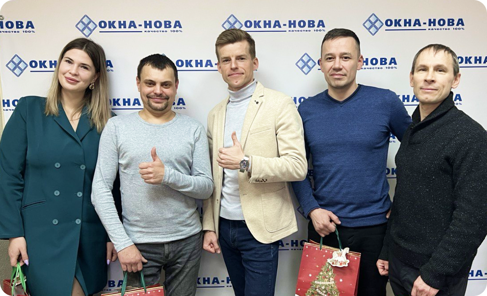
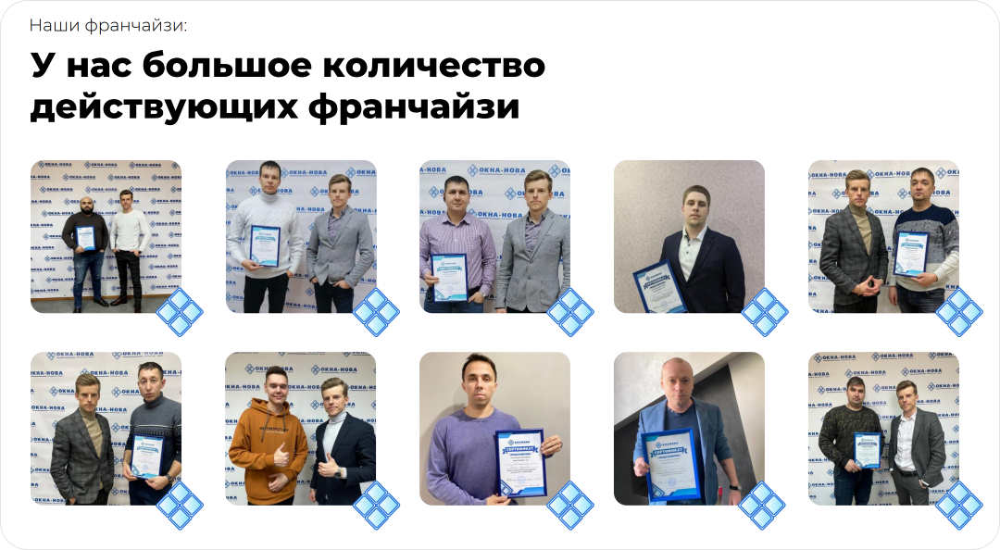
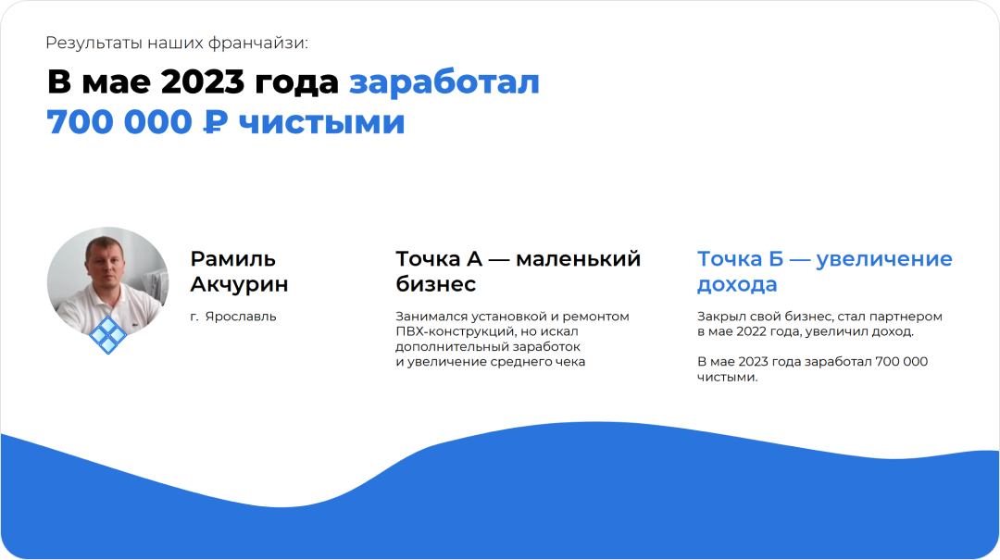
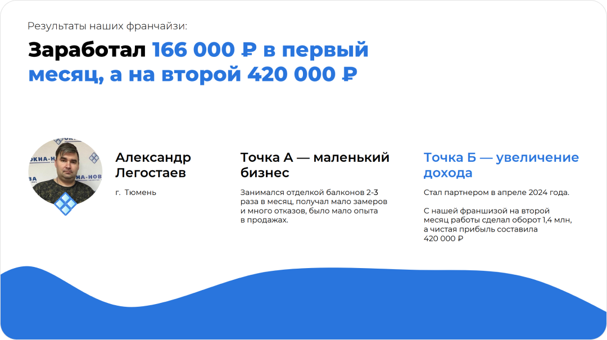
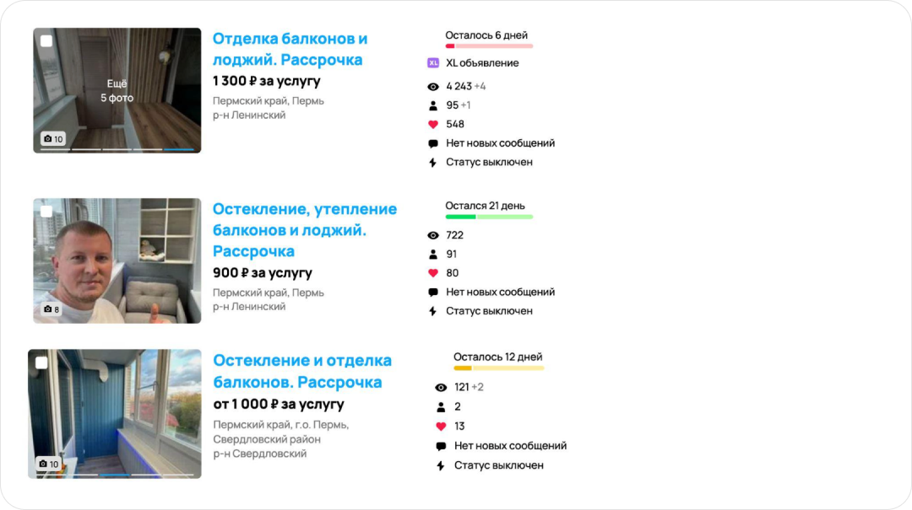
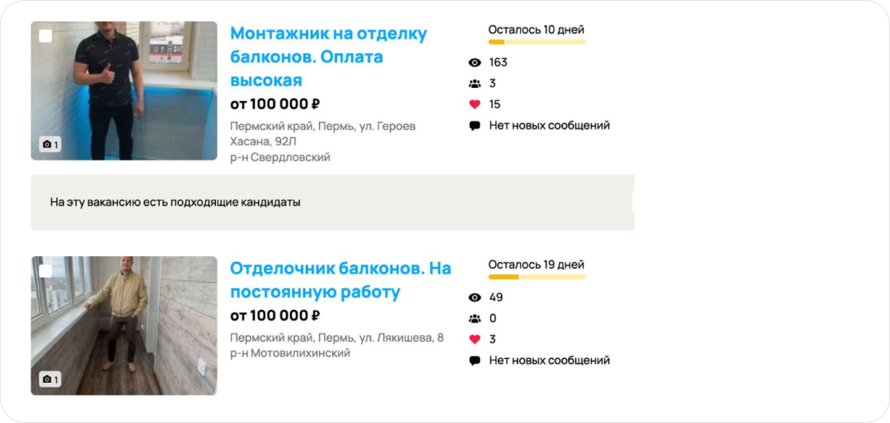

Подробная инструкция о том, как Вам запустить строительный бизнес у Вас в городе и начать зарабатывать от 205 000 рублей в месяц
Меня зовут Владислав Слащев. Я основатель и руководитель компании «Окна-Нова». 12 лет я занимаюсь строительным бизнесом, выручка которого составляет более 35 млн в год.
С 2012 года мы занимаемся социально-значимым бизнесом - остеклением и дизайнерской отделкой балконов и лоджий, расширяем полезную площадь квартир, делая балконы теплыми и красивыми.
За это время пройдены ошибки, взлеты и падения, кризисы, накоплен огромный опыт, налажены все бизнес-процессы и сформирована команда.
{kind=link}
{kind=link}
{kind=link}
{kind=link}
В 2022 году открывается второе направление моей деятельности – запуск франшизы, и мы начали искать партнеров, которые также заинтересованы в предоставлении качественных услуг по остеклению и дизайнерской отделке балконов в своих городах и, конечно же, в высоких заработках. И теперь я являюсь основателем международной сети "ОКНА-НОВА", которая охватывает более 70 филиалов в 3 странах (Россия, Казахстан, Узбекистан).
Запустить строительный бизнес с нуля – непростая задача, но реалистичная, если применить правильный подход.
Я помогаю моим партнерам открыть такой же бизнес «под ключ» у них в городе и начать зарабатывать от 200-900 тысяч рублей чистыми в месяц.
Вот некоторые результаты наших партнеров:
Например, Рамиль Акчурин из Ярославля заработал 700 000 рублей чистыми в мае 2023г.
Точка А – маленький бизнес. Устанавливал и ремонтировал ПВХ-конструкции, но искал дополнительный заработок.
Точка Б – увеличение прибыли. Закрыл свой бизнес. Стал нашим партнером в мае 2022г. И увеличил свой доход. А через год вышел на заработок 700 000 рублей в месяц.
Александр Легостаев из Тюмени в первый месяц заработал 166 000 рублей, а во второй – 420 000 рублей.
Точка А – занимался отделкой балконов 2 – 3 раза в месяц. Было мало замеров и много отказов. Мало опыта в продажах.
Точка Б – в апреле 2024г. стал нашим партнером. С франшизой сделал оборот 1,4 млн. за второй месяц работы. Чистая прибыль – 420 000 рублей.
Многие думают, что строительный бизнес – это очень сложно. Нужен офис, склад, штат сотрудников. Но я могу точно сказать, что это не так. Если как следует вникнуть в процесс, то вы поймете, что все не так страшно.
Как запустить строительный бизнес в вашем городе? Давайте разбираться.
Шаг 1. Необходимо правильно выбрать нишу.
Чем выше средний чек, тем проще бизнес. Как считаете, проще же заработать 70 000 руб. и выше с одной сделки, чем эту же сумму с 10 или 20 сделок?
Основные критерии на которые нужно ориентироваться при выборе нишы:
- Растущий рынок (в нашем направлении 30% ежегодный прирост).
- Наценка на услуги не менее 50%. Например, на наших услугах с одной сделки можно заработать 50 000-100 000 руб. чистыми).
- На старте не должно быть больших вложений (в нашем бизнесе на старте офис, склад, штат сотрудников не требуются, а это примерно 1 000 000 рублей экономии в год)
- На первых этапах можно совмещать с основной работой
- Работа должна быть практически круглый год, в независимости от времени года
На дизайнерской отделке балконов и лоджий можно зарабатывать от 200 000 рублей в мес. и больше.
Давайте посчитаем, как вы сможете зарабатывать от 200 000 тыс. чистыми в месяц на ремонте балконов:
- Оборот за месяц (из расчета всего 6-ти договоров на остекление, отделку, шкафы) – 822 000 руб.
- Средний чек за договор – 137 000 руб
- Материал – 369 900 руб.
- Зарплата монтажникам – 123 300 руб.
- Реклама – 55 650 руб.
- Налоги – 49 320 руб. (применяем налоговую систему УСН 6%, платим не из своих заработанных, платит Клиент, так как налоги закладываются в договора)
- Постоянные расходы (соц. взносы, связь, бухгалтерия) – 6 700 руб.
Чистая прибыль: 217 130 руб.
Таким образом, получить чистую прибыль от 200 000 рублей за месяц не составит никаких сложностей, для этого вам понадобятся всего 2 отделочника.
Ниже я приведу пример анализа одного из отработанных нашим филиалом месяцев.

Шаг 2: Регистрация бизнеса и получение необходимых документов.
Нужно определиться с формой собственности: ИП или ООО. Получить необходимые лицензии и разрешения. Это может включать в себя лицензию на строительную деятельность, разрешения на подключение к инженерным сетям и другие документы.
Ниже прикладываю подробную инструкцию по открытию ИП и выбору налоговой системы, которую мы даем каждому нашему партнеру, а также полное сопровождение бухгалтерами нашей компании:
ПОШАГОВАЯ ИНСТРУКЦИЯ
по регистрации ИП для работы на патентной
системе налогообложения.
Шаг 1. Регистрация индивидуального предпринимателя
(далее по тексту – ИП).
Мы рекомендуем работать как ИП, так как процедура регистрации проще, возможно применение патентной системы - одного из самых удобных и лояльных налоговых режимов, не нужно вести полномасштабный бухгалтерский учет и объем отчетности, которую нужно представлять разным контролирующим органам значительно меньше, чем у юридического лица.
Зарегистрировать ИП можно разными способами:
- онлайн на сайте nalog.ru
- лично в МФЦ
- лично через нотариуса
- лично в налоговой инспекции
- по почтe
Размер госпошлины 800 руб. при подаче бумажного заявления. Бесплатно — если подадите заявление электронно, через нотариуса или МФЦ. При этом услуги нотариуса платные.
Для регистрации в личном кабинете на сайте налоговой службы (www.nalog.gov.ru) необходимо оформить усиленную электронно-цифровую подпись (можно на сайте ФНС РФ).
Кроме того, бесплатно зарегистировать ИП можно, воспользовавшись услугами банка, в котором Вы планируете открыть расчётный счёт (такие услуги оказывают, например, Альфа Банк, Сбербанк, Тинькофф)
Пакет документов для регистрации ИП лично в ФНС:
- заявление о государственной регистрации физического лица в качестве индивидуального предпринимателя (форма № Р21001).
- копия российского паспорта.
- квитанция об уплате госпошлины в размере 800 руб. Сформировать квитанцию на уплату госпошлины можно с помощью сервиса «Уплата госпошлины».
Уведомление о переходе на упрощенную систему налогообложения (форма № 26.2-1), подаем вместе с пакетом на регистрацию ИП.
В рамках УСН выбираем объект налогообложения - доходы.
При регистрации ИП указываем в заявлении о государственной регистрации физического лица в качестве индивидуального предпринимателя вид деятельности:
ОКВЭД 41.20 «Реконструкция или ремонт существующих жилых и нежилых зданий, а также спортивных сооружений»
При регистрации ИП нужно выбрать систему налогообложения. От нее зависит размер платежей, их график и способ ведения бухгалтерского учета.
СПРАВОЧНО: Системы налогообложения
Для индивидуальных предпринимателей действует следующие режимы налогообложения:
- общая система налогообложения;
- упрощенная система налогообложения.
ДОПОЛНИТЕЛЬНО к выбранной из перечисленных двух систем налогообложения может применяться патентная система налогообложения.
Общая система налогообложения (ОСНО) — здесь предприниматель является плательщиком НДФЛ 13% и НДС 20%.
Общий налоговый режим является основным и применяется по умолчанию, если индивидуальный предприниматель при регистрации не подал в налоговый орган заявление о переходе на упрощённую систему налогообложения.
Упрощенная система налогообложения (УСН) — ставка налога зависит от объекта налогообложения и составляет либо 6% (если объект налогообложения — «доходы»), либо 15% (объект налогообложения — «доходы минус расходы»).
Патентная система налогообложения (ПСН) — это специальный налоговый льготный режим для ИП. Налог при ПСН равен стоимости патента и применяется на время, указанное в патенте. Он рассчитывается как предполагаемый доход, умноженный на 6%, и не меняется в зависимости от реально полученного дохода.
Мы рекомендуем выбрать упрощенную систему налогообложения с объектом налогообложения — «доходы» и, впоследствии, совместить ее с патентной системой налогообложения.
Индивидуальные предприниматели вправе работать без печати, поэтому изготавливать ее не нужно.
В случае если вы уже зарегистрированы в качестве индивидуального предпринимателя, то вам необходимо добавить новый вид деятельности: ОКВЭД 41.20 «Реконструкция или ремонт существующих жилых и нежилых зданий, а также спортивных сооружений».
Для этого необходимо подать заявление в налоговую инспекцию о внесении изменений в сведения об индивидуальном предпринимателе, содержащиеся в Едином государственном реестре индивидуальных предпринимателей, по форме № Р24001.
Шаг 2. Порядок действий по оформлению патентной системы налогообложения на отдельные виды деятельности
СПРАВОЧНО: Патентная система налогообложения (ПСН) устанавливается Налоговым кодексом, вводится в действие законами субъектов Российской Федерации и применяется на территориях указанных субъектов Российской Федерации.
Налогоплательщиками признаются индивидуальные предприниматели (ИП), перешедшие на патентную систему налогообложения.
Переход на патентную систему налогообложения или возврат к иным режимам налогообложения индивидуальными предпринимателями осуществляется добровольно.
Плательщикам ПСН также, как и плательщикам ЕНВД, предоставлено право уменьшать сумму налога, исчисленную за налоговый период, на страховые взносы.
Применять ПСН имеют право индивидуальные предприниматели, средняя численность наемных работников которых, не превышает за налоговый период, по всем видам предпринимательской деятельности, осуществляемым индивидуальным предпринимателем, 15 человек (ст. 346.43.НК РФ).
ИП теряет право на применение ПСН при превышении величины дохода 60 млн. руб., полученного с начала календарного года по всем видам деятельности, предусматривающим применение ПСН. (п/п 1 п 6 ст.346.45 НК РФ)
Документом, удостоверяющим право на применение ПСН является патент на осуществление 1 из видов предпринимательской деятельности, который действует на территории того муниципального образования, городского округа, города федерального значения или субъекта Российской Федерации, который указан в патенте (п. 1 ст.346.45 НК РФ).
Патент выдается с любого числа месяца, указанного ИП в заявлении на получение патента, на любое количество дней, но не менее месяца и в пределах календарного года выдачи.
Для получения патента индивидуальный предприниматель должен подать в налоговый орган заявление на получение патента по форме, утвержденной приказом ФНС России. Сделать это можно в личном кабинете ИП (ЛК ИП) на сайте Федеральной налоговой службы РФ (www.nalog.gov.ru), пройдя по разделам ЛК ИП Главная - Жизненные ситуации - Сменить / уточнить систему налогообложения.
Стоимость патента также можно рассчитать на сайте ФНС РФ (www.nalog.gov.ru), пройдя по разделам Сервисы и госуслуги – Для индивидуальных предпринимателей – Налоговые калькуляторы – Налоговый калькулятор-расчёт стоимости патента. Для получения данных в этом калькуляторе необходимо задать планируемый срок деятельности, на который покупается патент, место осуществления деятельности, а также – вид деятельности («Реконструкция или ремонт существующих жилых и нежилых зданий, а также спортивных сооружений» или «Услуги по остеклению балконов и лоджий, нарезке стекла и зеркал, художественной обработке стекла» в зависимости от того, какие виды деятельности Вы будете осуществлять).
В течение 5 дней со дня получения заявления на получение патента налоговый орган обязан выдать индивидуальному предпринимателю патент (п. 3 ст. 346.45 НК РФ).
Период, на который допускается оформить патент, ограничивается сроком от 1 до 12 месяцев.
Процедура продления времени действия патента выполняется по схеме, соответствующей процедуре первоначального получения документа. В территориальное отделение налоговой службы направляется соответствующее заявление.
Передача заявления для пролонгации действия документа должна быть выполнена не позже 20 декабря года (за 10 рабочих дней до конца года), на который распространено действие применяемой системы. Пропуск установленных сроков для обращения за продлением влечет за собой потерю права на данный вид налогообложения.
Кроме стоимости патента индивидуальные предприниматели уплачивают ежегодный Фиксированный платеж по страховым взносам за предпринимателя (при наличии работников, то за работников в размере 30,5% от суммы зарплаты). Величина фиксированного взноса за предпринимателя за 2024 г. составляет 49 500 руб. (ст. 430 НК РФ). Фиксированные взносы за неполный год считают пропорционально количеству месяцев и дней деятельности ИП. Например, если ИП зарегистрирован 21.03.2024, взнос за 2024 г. - 38 588,71 руб. (49 500 руб. / 12 мес. x 9 мес. + 49 500 руб. / 12 мес. / 31 дн. x 11 дн.). Срок уплаты фиксированного платежа за 2024 г. - 09.01.2025. Взносы можно платить частями в течение года или единовременно.
Дополнительный взнос на Обязательное Пенсионное Страхование (ОПС) - 1% с доходов, превышающих 300 000 руб. за год. Доходами для ИП, работающих на патенте считается ПСН - потенциально возможный годовой доход (Письмо Минфина от 12.04.2019 N 03-15-05/26086). Максимальный допвзнос за 2023 г. - 257 061 руб., за 2024 г. - 277 571 руб. Срок уплаты взноса 1% за 2024 г. - 01.07.2025.
На сумму уплаченных в течение года страховых взносов можно уменьшить стоимость патента (пп. 1 п. 3.1 ст. 346.21, пп. 1 п. 1.2 ст. 346.51 НК РФ).
При планировании расчётов с наличными денежными средствами, либо расчётов с физическими лицами, ИП обязательно должен зарегистрировать кассовый аппарат и выдавать чеки контрольно-кассового аппарата при получении наличных денежных средств от юридических лиц, или индивидуальных предпринимателей, и при любом виде расчётов (наличные и безналичные) с физическими лицами.
Шаг 3. Изучаем материалы.
Сразу скажу, чтобы создавать дизайнерские балконы, не нужно использовать какие-то сложные, труднодоступные материалы, все эти материалы продаются в любых строительных магазинах, базах и т.д. (Леруа Мерлен, Касторама, Петрович)
Для создания красивых и теплых балконов мы используем следующие материалы:Отделочные – Евровагонка, Вагонка Штиль, Стеновой паркет из Липы, Ламинат, Линолеум, МДФ, Фанера, Половая доска, Немецкие подоконники, Премиум пропитка
Утеплители – пеноплекс разной толщины, тепло и гидроизоляция, инфракрасные полы
Посмотрите видео про материалы для дизайнерской отделки:
https://disk.yandex.com.am/i/U_Qct2dGMAi1ogШаг 4. Ищем поставщиков, формируем прайсы
Вам в помощь поисковики Яндекс, Google, Яндекс карты, 2GIS, Оптовые рынки и розничные магазины.
Часто для работы с поставщиками требуется оформление юридического лица. Как зарегистрировать ИП или ООО смотрите выше. Но всегда можно договориться.
Поставщики предоставляют цены из нескольких колонок: розничная цена, для строителей - опт, крупный опт. Обсудите цены, естественно поставщики не сразу вам дадут самые выгодные условия, но с ростом объема закупок вы придете к желанным условиям.
Совет! Отправьте заявки по нескольким поставщикам и сравните цены.
Делюсь с вами парочкой наших уроков из обучения, в которых я рассказываю, где какой материал лучше закупать, чтобы не переплачивать:
https://disk.yandex.com.am/i/YWloRH8xerWkcA
https://disk.yandex.com.am/i/pi6KfgPflwAMKQ
Шаг 5. Ищем Клиентов
В нашей компании есть маркетинговый план, который включает в себя 4 рекламных канала, откуда мы стабильно получаем Клиентов на наши услуги, мы используем различные технологии обработки заявок, чат-боты, искусственный интеллект, квизы, выглядит план следующим образом:
Маркетинговый план
- Всем новым партнерам в первую очередь настраиваем рекламу через площадку Авито, так как при небольших рекламных вложениях можно стабильно получать Клиентов.
- Параллельно работе авитологов подключаются маркетологи, которые начинают накручивать отзывы в аккаунт, так как Клиенты обращают внимание на аккаунты с положительными отзывами, это обязательная часть в продвижении аккаунта в Авито, стоимость написания отзывов – 300р/шт.
- Подключение Искусственного интеллекта на обработку заявок к Авито
Преимущества:
- Оперативно обрабатывает заявки, квалифицирует клиентов, берет телефон и скидывает готовую заявку в Телеграм.
- Из-за быстрой скорости и качества ответа, объявления ранжируются выше и показываются в рекомендациях, получаем больше заказов от клиентов.
- Работает 24/7, обрабатывает клиентов всегда.
- Не нужно больше караулить Авито или думать, что ответить клиенту.
- Когда клиенту оперативно и четко отвечают, у него складывается положительное впечатление о компании и он доверяет гораздо больше, чем тем, кто отвечает не сразу. В итоге: экономит время и нервы, дает гораздо больше заказов при том же бюджете на рекламу.
3.
Следующим каналом для увеличения количества заявок подключаем Лидогенерацию. Смысл работы канала следующий: маркетологи настраиваются на сайты конкурентов, выявляют номера телефонов Клиентов, которые заходят к ним на сайты, через свой колл-центр прозванивают их, выявляют потребность в остеклении и отделки балконов и передают вам информацию – Имя, адрес, номер телефона, услуга, ваша задача созвониться с Клиентом и закрыть его на замер. Стоимость услуги – фиксированная цена за заявку. Продаются пакетами от 10 заявок. Преимущество в том, что вам не нужно платить за ведение, не нужно создавать сайт и прочее.
4.
Далее на выбор подключаем рекламу во Вконтакте или Сайт с настроенной рекламой в Яндекс. В этих 2-х источниках заявки самые теплые, но эффективность не сразу, так как идет обучение рекламных кампаний, поэтому бюджет нужно предполагать на несколько месяцев, поэтому подключаем их не в первую очередь, так как у многих бюджет ограничен.
Рекомендации по рекламе в Авито!
- Сделайте несколько объявлений с разными названиями: «Утепление балкона», «Совместить лоджию с кухней», «Дизайнерский ремонт лоджии»…и др.
- На главной фотографии профиля нужно размещать фото красивого балкона или свое фото на фоне балкона, так как такие объявления вызывают больше доверия и Клиенты Авито охотнее заказывают у частников, чем у компаний, поэтому в основном пропускают объявления, где на главном фото логотип компании и подобные фотографии.
Вот несколько примеров наших объявлений:
А также прилагаю шаблон текста для объявлений:
Описание
Дизайнерская отделка, остекление, утепление, ремонт балконов и лоджий под ключ в Перми.
- 🔥 Гарантия 5 лет по договору.
- 🔥 Рассрочка без процентов
- 🔥 Лучшая стоимость на дизайнерскую отделку
- 🔥 Выезд на замер с образцами материалов и дизайнами балконов бесплатно, в удобное для Вас время
- 🔥 Заключаем договор, цену фиксируем в договоре, она не меняется в конце работы.
СДЕЛАЕМ СКИДКУ 10 000 РУБ., ПРИ ЗАКАЗЕ ПОЛНОЙ ОТДЕЛКИ ПОД КЛЮЧ — ☎️ ЗВОНИТЕ
ЕСЛИ ВЫ ХОТИТЕ
- ➖ Утеплить балкон, сделать теплый пол
- ➖ Расширить/совместить балкон или лоджию с кухней или комнатой
- ➖ Сделать рабочий кабинет, рабочую зону на балконе или лоджии
- ➖ Остеклить балкон или лоджию, сделать панорамные окна
- ➖ Обшить и утеплить балкон снаружи
- ➖ Оборудовать вместительную кладовую на балконе или лоджии
- ➖ Сделать дизайнерский ремонт на балконе
- ➖ Подвести электричество, установить розетки
☎️ Звоните или пишите в чат авито
Мы не делаем ремонт квартир. Наша цель — сделать из Вашего балкона функциональное и комфортабельное пространство. Вы забудете о шуме и холоде, увеличите полезную площадь в квартире и получите уютное пространство для отдыха, работы и хранения.
- ✔️ Замеры, подсчет материала, закупки, подъем на этаж, установка окон, отделка, уборка — под ключ. Вам не нужно никуда бегать, ничего докупать, никуда звонить.
- ✔️ Выезжаем бесплатно на замер по городу. С собой на замер мы привозим образцы материалов, различные дизайны с готовыми решениями.
- ✔️С наработанной годами базой поставщиков, мы закупаем материалы по самым низким ценам в Перми, поэтому наши балконы и лоджии отличаются качеством, красотой и удобством, а цены на них ниже среднерыночных.
- ✔️ После себя мусор складываем в мешки и выносим
_ _ _ _ _ _ _ _ _ _ _ _
ХАРАКТЕРИСТИКИ:
- - Обшивка стен: вагонка крашеная эмалью RAL 3349
- - Потолок: Натяжной матовый 1 светильник
- - Дополнительно: Подсветка по всему периметру
- - Настил пола: плитка
- - Теплый пол регулируемый AS9574
- - Утепление всех холодных стен, пола и потолка минеральной ватой
- - Электромонтажные работы (2 розетки) 1 выключатель
- - Установка пластикового подоконника белого цвета
- - Установка сушилки Лиана №955
- - Цвет плитки: RAL1455
- - Размер: 2810x1390x2640
- - Цвет: RAL3812
- - Тип отделки: внутренняя отделка с установкой теплого пола
- - Тип остекления: теплое
🔥 Расскажите, как Вы планируете использовать Ваш балкон, наш менеджер ответит на все вопросы, предложит решение под Ваш запрос и бюджет и рассчитает стоимость — звоните или пишите в чат авито.
Важно!
- Для привлечения клиентов есть множество способов, вы сами в этом убедились, но самое главное найти грамотных специалистов-маркетологов, которые качественно настроят эту рекламу, будут вести вам клиентов и не сольют ваши деньги.
- Я за многие годы слил миллионы на тесты рекламных площадок, маркетологов, пока не создал команду из проверенных специалистов, которые знают, как правильно искать клиентов, как настраивать рекламу, чат-боты и т.д.
Шаг 6. Подбор монтажников.
ВАЖНО! Для наших партнеров мы самые сложные процессы на старте берем на себя – поиск поставщиков и монтажных бригад!
Также в нашей компании есть подробная инструкция, включающая в себя 10 каналов, где можно искать себе работников, а ниже я подробно расскажу о некоторых из них.
ИНСТРУКЦИЯ
Как подбирать монтажные бригады?
Размещаем платно 3 объявления: на монтажников балконов, отделочников, сборщиков шкафов (шаблоны вакансий есть в документах)
Размещение недорогое, но в случае необходимости применяем платное еженедельное продвижение.
Открываем рубрику работа, выбираем «ищу сотрудника», вписываем должность интересующую, покупаем платно резюме и прозваниваем всех подряд.
Вписывать нужно следующие должности (монтажник балконов, монтажник окон, отделочник балконов, отделочник, сборщик шкафов), чтобы найти максимальное количество резюме.
Да, здесь в основном частники-шабашники, но у них бывают пробелы в работе, и они могут согласиться поработать у вас. Заходим и прозваниваем всех.
❗️Задача на этом этапе собрать, как можно больше откликов от потенциальных исполнителей, провести собеседования, собрать данные, заполнить анкеты.
На собеседованиях запрашивайте фото работ монтажников.
Я рекомендую собирать отклики от исполнителей регулярно, тогда у вас будет постоянная база. Если у вас появится срочный объект, то вы быстро сможете найти бригаду.
Примеры объявлений:
Вот основные моменты, которые Вам нужно будет пройти, чтобы запустить успешный бизнес у Вас в городе.
ЗАКЛЮЧЕНИЕ
У вас есть 2 пути для запуска бизнеса:
1. Самостоятельно внедрить все процессы.
В этом случае часто происходят такие проблемы, как сложности с поиском поставщиков и рабочими бригадами, нет постоянного потока клиентов, есть много вопросов, но нет ответов на них. Приходится набивать шишки, ошибаться и учиться на ошибках. Путь сложный и очень долгий.
2. Путь запуска строительного бизнеса пройти со мной за руку.
В этом случае вы получаете:
- 12-ти летний опыт компании. Это не даст вам совершить ошибки и сохранит ваши финансы.
- Доскональное обучение всем аспектам бизнеса.
- Юридическое и бухгалтерское сопровождение. А это экономия 50 000 рублей ежемесячно.
- Сайт стоимостью 80 000 рублей.
- Привлечение клиентов. Мы вам предоставляем проверенных специалистов по маркетингу по ценам для нашей сети.
- Более 500 проектов дизайнов балконов для презентации на замерах.
- Сопровождение технического директора, инженеров-замерщиков.
- Пакет документов для ведения вашего бизнеса (договора с Клиентами, регламенты, техника найма сотрудников и их мотивация, инструкции по рекламе и многое другое).
- Фирменное оборудование для презентации на замерах.
- Базу поставщиков и монтажников на старте.
- Личное кураторство опытными партнерами с доведением до первых результатов.
Я всегда за второй вариант, так как взять опыт человека, который уже прошел большой путь, собрал много знаний и допустил много ошибок, всегда дешевле и быстрее.
Чтобы прийти к результату 5 000 000 руб. оборота в месяц, мне потребовалось 10 лет. А мой партнер сделал это через год, благодаря настроенным процессам.
Наша бизнес-модель позволяет работать нескольким партнерам в одном городе, но так как в наш бизнес заходят ежемесячно 5-10 партнеров, города быстро закрываются и мы больше не продаем в них франшизы, чтобы Клиентов всем хватало. Так например, мы уже не принимаем заявки на партнерство в следующие города: Туапсе, Сыктывкар, Бузулук, Пермь, Екатеринбург, Набережные Челны, Кумертау, Альметьевск.
Если вы из этих городов и есть сильное желание стать нашим партнером, то можно рассмотреть близлежащие города, пока они свободны.
Но есть один момент: Я беру только тех, в чьемЗ результате я буду уверен, поэтому мне нужно посмотреть на ваш город, опыт и понять, насколько целесообразно будет запускать бизнес.
Поэтому, если хотите понять имеет ли смысл именно Вам запускать строительный бизнес и получить пошаговый план действий, то приходите к нам на экскурсию по нашему бизнесу.
Чтобы попасть на нее, Вам нужно заполнить короткую анкету, и после ее изучения мы напишем Вам и договоримся о звонке.